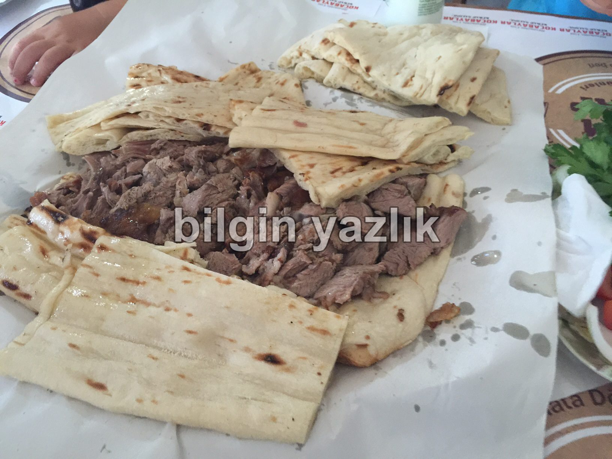
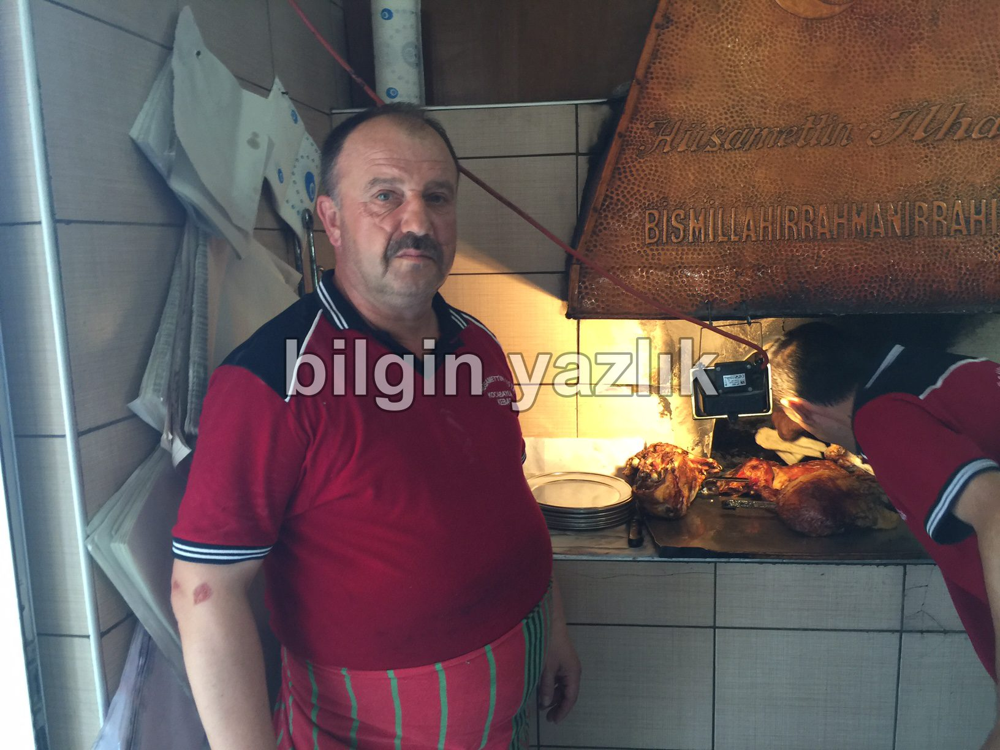
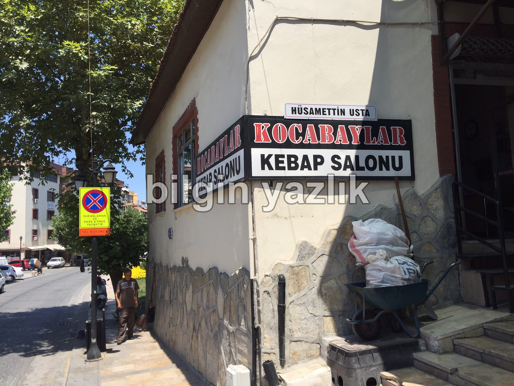

Kocabaylar Kebap Salonu
Denizli Merkez’de Bayram Yeri olarak adlandırılan meydanda yer alan Kocabaylar Kebap Salonu “Denizli Kebabı” yapıyor.
Kebap diyince aklınıza hemen kuş başı et ile veya kıyma ile yapılmış, şişe geçirilmiş ve közde pişirilmiş et gelmesin.
Denizli Kebabı, aslında fırında pişirilen bütün kuzu etinden yapılıyor.
Mekanı salaş olarak tanımlarsak yanlış yapmış olmayız.
Kuzu eti, bir tabak içerisinde kaç kişi olursanız olun ortaya servis ediliyor ve çatal, bıçak, kaşık verilmiyor.
Bu kebap elle yenilir diyorlar ve çatal diye ısrar ederseniz dahi çatal yok diyorlar.
Kebabın altında üstünde yanında bol miktarda ince lavaş veriyorlar, lavaşı iyice kuzu yağına bulayıp öylece servis ediyorlar.
Salata olarak büyük dilim domates, salatalık ve soğan servis ediyorlar.
Lezzeti müthiş, kıvamı lokum, mutlaka tadın derim.
Zaten bu mekan Vedat Milor’dan beş yıldız almış.
Bir gazete haberine göre ise bu mekan Türkiye’de en iyi kebap yapan ilk 10 kebapçı arasında yer alıyor.



Bu yazı taliyol arşivinden taşınmıştır. · özgün kayıt